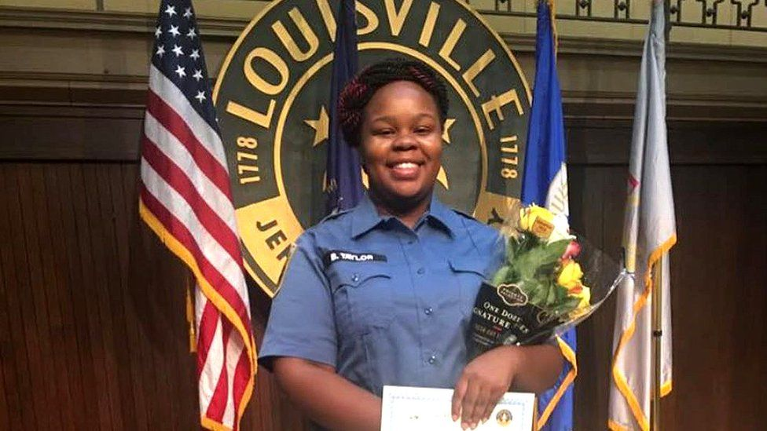
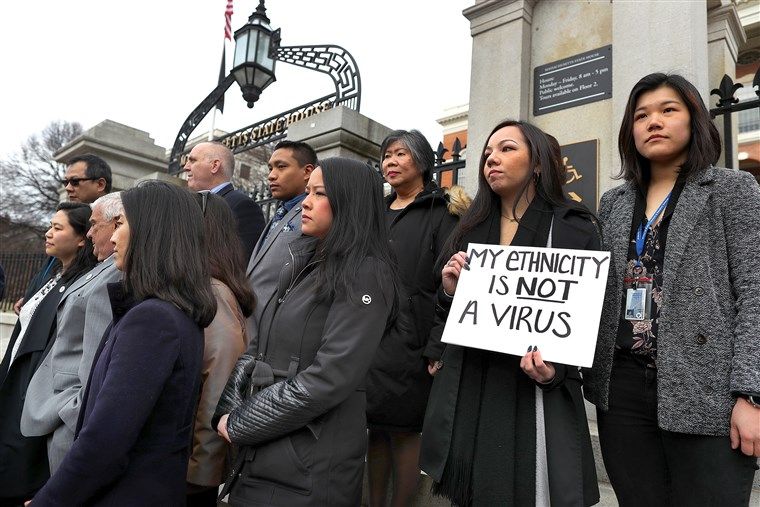

Goodbye 2020

The Killing of George Floyd
Arguably one of the most important moments that sparked widespread protests against police brutality across the United States came from the killing of George Floyd by police officers.
This horrific murder was caught on film, causing many to wonder what violence police commit and are not held accountable for if it is not documented. While this death was a major moment, it made many realize the deaths of others whose names will never be known. From there, the Black Lives Matter movement grew in size and is continuing the fight against police brutality.

Who is Breonna Taylor?
Breonna Taylor was an award-winning EMT and truly outstanding citizen. She helped her community during times of crises, and especially throughout the pandemic.
One night, the Louisville Police Department performed an illegal, unannounced drug raid on her home using a no-knock warrant. After knocking down the door, they fired into her home, killing her. As more information came out, it became clear that the person on the warrant had already been arrested earlier that day. This death is one of many that still has not received justice.

Trump and the Coronavirus
While the Covid-19 pandemic is thought to have originated in Wuhan, China, President Trump's racist remarks calling it the "Chinese Virus" is blatant racism.
This usage is worrisome as it could lead to discrimination and racism toward Asian Americans. This group already has a long history of being scapegoated amid public health crises, CNN reported. Furthermore, it creates xenophobia and does absolutely nothing to unite our country in the face of a pandemic.